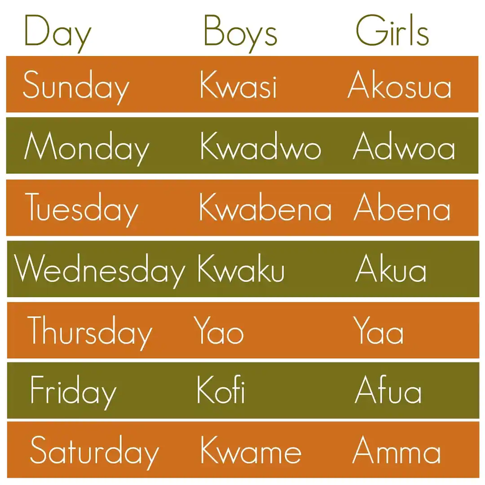

Akan Names
Akan names are derived from Ghanian culture. Frequently in Ghana, children are given their first name as a 'day name' which corresponds to the day in the week they were born. These day names have further meanings concerning the soul
and character of the person. Middle names have considerably more variety and can refer to their birth order, twin status, or an ancestor's middle name. These names are also used among Ghanaians living abroad and among Africans
living in the diaspora who wish to identify with their ancestral homeland.
This webpage allows you to enter your date of birth(year, month and date) and gender and outputs for you your ghanian first name.As shown below
